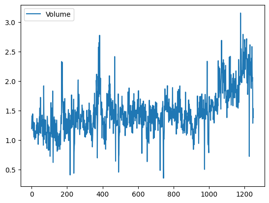

Logistic Regression, LDA, QDA, and KNN#

The Stock Market Data#
In this lab we will examine the Smarket
data, which is part of the ISLP
library. This data set consists of percentage returns for the S&P 500
stock index over 1,250 days, from the beginning of 2001 until the end
of 2005. For each date, we have recorded the percentage returns for
each of the five previous trading days, Lag1 through
Lag5. We have also recorded Volume (the number of
shares traded on the previous day, in billions), Today (the
percentage return on the date in question) and Direction
(whether the market was Up or Down on this date).
We start by importing our libraries at this top level; these are all imports we have seen in previous labs.
import numpy as np
import pandas as pd
from matplotlib.pyplot import subplots
import statsmodels.api as sm
from ISLP import load_data
from ISLP.models import (ModelSpec as MS,
summarize)
We also collect together the new imports needed for this lab.
from ISLP import confusion_table
from ISLP.models import contrast
from sklearn.discriminant_analysis import \
(LinearDiscriminantAnalysis as LDA,
QuadraticDiscriminantAnalysis as QDA)
from sklearn.naive_bayes import GaussianNB
from sklearn.neighbors import KNeighborsClassifier
from sklearn.preprocessing import StandardScaler
from sklearn.model_selection import train_test_split
from sklearn.linear_model import LogisticRegression
Now we are ready to load the Smarket data.
Smarket = load_data('Smarket')
Smarket
| Year | Lag1 | Lag2 | Lag3 | Lag4 | Lag5 | Volume | Today | Direction | |
|---|---|---|---|---|---|---|---|---|---|
| 0 | 2001 | 0.381 | -0.192 | -2.624 | -1.055 | 5.010 | 1.19130 | 0.959 | Up |
| 1 | 2001 | 0.959 | 0.381 | -0.192 | -2.624 | -1.055 | 1.29650 | 1.032 | Up |
| 2 | 2001 | 1.032 | 0.959 | 0.381 | -0.192 | -2.624 | 1.41120 | -0.623 | Down |
| 3 | 2001 | -0.623 | 1.032 | 0.959 | 0.381 | -0.192 | 1.27600 | 0.614 | Up |
| 4 | 2001 | 0.614 | -0.623 | 1.032 | 0.959 | 0.381 | 1.20570 | 0.213 | Up |
| ... | ... | ... | ... | ... | ... | ... | ... | ... | ... |
| 1245 | 2005 | 0.422 | 0.252 | -0.024 | -0.584 | -0.285 | 1.88850 | 0.043 | Up |
| 1246 | 2005 | 0.043 | 0.422 | 0.252 | -0.024 | -0.584 | 1.28581 | -0.955 | Down |
| 1247 | 2005 | -0.955 | 0.043 | 0.422 | 0.252 | -0.024 | 1.54047 | 0.130 | Up |
| 1248 | 2005 | 0.130 | -0.955 | 0.043 | 0.422 | 0.252 | 1.42236 | -0.298 | Down |
| 1249 | 2005 | -0.298 | 0.130 | -0.955 | 0.043 | 0.422 | 1.38254 | -0.489 | Down |
1250 rows × 9 columns
This gives a truncated listing of the data. We can see what the variable names are.
Smarket.columns
Index(['Year', 'Lag1', 'Lag2', 'Lag3', 'Lag4', 'Lag5', 'Volume', 'Today',
'Direction'],
dtype='str')
We compute the correlation matrix using the corr() method
for data frames, which produces a matrix that contains all of
the pairwise correlations among the variables.
By instructing pandas to use only numeric variables, the corr() method does not report a correlation for the Direction variable because it is
qualitative.
Smarket.corr(numeric_only=True)
| Year | Lag1 | Lag2 | Lag3 | Lag4 | Lag5 | Volume | Today | |
|---|---|---|---|---|---|---|---|---|
| Year | 1.000000 | 0.029700 | 0.030596 | 0.033195 | 0.035689 | 0.029788 | 0.539006 | 0.030095 |
| Lag1 | 0.029700 | 1.000000 | -0.026294 | -0.010803 | -0.002986 | -0.005675 | 0.040910 | -0.026155 |
| Lag2 | 0.030596 | -0.026294 | 1.000000 | -0.025897 | -0.010854 | -0.003558 | -0.043383 | -0.010250 |
| Lag3 | 0.033195 | -0.010803 | -0.025897 | 1.000000 | -0.024051 | -0.018808 | -0.041824 | -0.002448 |
| Lag4 | 0.035689 | -0.002986 | -0.010854 | -0.024051 | 1.000000 | -0.027084 | -0.048414 | -0.006900 |
| Lag5 | 0.029788 | -0.005675 | -0.003558 | -0.018808 | -0.027084 | 1.000000 | -0.022002 | -0.034860 |
| Volume | 0.539006 | 0.040910 | -0.043383 | -0.041824 | -0.048414 | -0.022002 | 1.000000 | 0.014592 |
| Today | 0.030095 | -0.026155 | -0.010250 | -0.002448 | -0.006900 | -0.034860 | 0.014592 | 1.000000 |
As one would expect, the correlations between the lagged return variables and
today’s return are close to zero. The only substantial correlation is between Year and
Volume. By plotting the data we see that Volume
is increasing over time. In other words, the average number of shares traded
daily increased from 2001 to 2005.
Smarket.plot(y='Volume');

Logistic Regression#
Next, we will fit a logistic regression model in order to predict
Direction using Lag1 through Lag5 and
Volume. The sm.GLM() function fits generalized linear models, a class of
models that includes logistic regression. Alternatively,
the function sm.Logit() fits a logistic regression
model directly. The syntax of
sm.GLM() is similar to that of sm.OLS(), except
that we must pass in the argument family=sm.families.Binomial()
in order to tell statsmodels to run a logistic regression rather than some other
type of generalized linear model.
allvars = Smarket.columns.drop(['Today', 'Direction', 'Year'])
design = MS(allvars)
X = design.fit_transform(Smarket)
y = Smarket.Direction == 'Up'
glm = sm.GLM(y,
X,
family=sm.families.Binomial())
results = glm.fit()
summarize(results)
| coef | std err | z | P>|z| | |
|---|---|---|---|---|
| intercept | -0.1260 | 0.241 | -0.523 | 0.601 |
| Lag1 | -0.0731 | 0.050 | -1.457 | 0.145 |
| Lag2 | -0.0423 | 0.050 | -0.845 | 0.398 |
| Lag3 | 0.0111 | 0.050 | 0.222 | 0.824 |
| Lag4 | 0.0094 | 0.050 | 0.187 | 0.851 |
| Lag5 | 0.0103 | 0.050 | 0.208 | 0.835 |
| Volume | 0.1354 | 0.158 | 0.855 | 0.392 |
The smallest p-value here is associated with Lag1. The
negative coefficient for this predictor suggests that if the market
had a positive return yesterday, then it is less likely to go up
today. However, at a value of 0.15, the p-value is still
relatively large, and so there is no clear evidence of a real
association between Lag1 and Direction.
We use the params attribute of results
in order to access just the
coefficients for this fitted model.
results.params
intercept -0.126000
Lag1 -0.073074
Lag2 -0.042301
Lag3 0.011085
Lag4 0.009359
Lag5 0.010313
Volume 0.135441
dtype: float64
Likewise we can use the
pvalues attribute to access the p-values for the coefficients.
results.pvalues
intercept 0.600700
Lag1 0.145232
Lag2 0.398352
Lag3 0.824334
Lag4 0.851445
Lag5 0.834998
Volume 0.392404
dtype: float64
The predict() method of results can be used to predict the
probability that the market will go up, given values of the
predictors. This method returns predictions
on the probability scale. If no data set is supplied to the predict()
function, then the probabilities are computed for the training data
that was used to fit the logistic regression model.
As with linear regression, one can pass an optional exog argument consistent
with a design matrix if desired. Here we have
printed only the first ten probabilities.
probs = results.predict()
probs[:10]
array([0.50708413, 0.48146788, 0.48113883, 0.51522236, 0.51078116,
0.50695646, 0.49265087, 0.50922916, 0.51761353, 0.48883778])
In order to make a prediction as to whether the market will go up or
down on a particular day, we must convert these predicted
probabilities into class labels, Up or Down. The
following two commands create a vector of class predictions based on
whether the predicted probability of a market increase is greater than
or less than 0.5.
labels = np.array(['Down']*1250)
labels[probs>0.5] = "Up"
The confusion_table()
function from the ISLP package summarizes these predictions, showing how
many observations were correctly or incorrectly classified. Our function, which is adapted from a similar function
in the module sklearn.metrics, transposes the resulting
matrix and includes row and column labels.
The confusion_table() function takes as first argument the
predicted labels, and second argument the true labels.
confusion_table(labels, Smarket.Direction)
| Truth | Down | Up |
|---|---|---|
| Predicted | ||
| Down | 145 | 141 |
| Up | 457 | 507 |
The diagonal elements of the confusion matrix indicate correct
predictions, while the off-diagonals represent incorrect
predictions. Hence our model correctly predicted that the market would
go up on 507 days and that it would go down on 145 days, for a
total of 507 + 145 = 652 correct predictions. The np.mean()
function can be used to compute the fraction of days for which the
prediction was correct. In this case, logistic regression correctly
predicted the movement of the market 52.2% of the time.
(507+145)/1250, np.mean(labels == Smarket.Direction)
(0.5216, np.float64(0.5216))
At first glance, it appears that the logistic regression model is working a little better than random guessing. However, this result is misleading because we trained and tested the model on the same set of 1,250 observations. In other words, \(100-52.2=47.8%\) is the training error rate. As we have seen previously, the training error rate is often overly optimistic — it tends to underestimate the test error rate. In order to better assess the accuracy of the logistic regression model in this setting, we can fit the model using part of the data, and then examine how well it predicts the held out data. This will yield a more realistic error rate, in the sense that in practice we will be interested in our model’s performance not on the data that we used to fit the model, but rather on days in the future for which the market’s movements are unknown.
To implement this strategy, we first create a Boolean vector corresponding to the observations from 2001 through 2004. We then use this vector to create a held out data set of observations from 2005.
train = (Smarket.Year < 2005)
Smarket_train = Smarket.loc[train]
Smarket_test = Smarket.loc[~train]
Smarket_test.shape
(252, 9)
The object train is a vector of 1,250 elements, corresponding
to the observations in our data set. The elements of the vector that
correspond to observations that occurred before 2005 are set to
True, whereas those that correspond to observations in 2005 are
set to False. Hence train is a
boolean array, since its
elements are True and False. Boolean arrays can be used
to obtain a subset of the rows or columns of a data frame
using the loc method. For instance,
the command Smarket.loc[train] would pick out a submatrix of the
stock market data set, corresponding only to the dates before 2005,
since those are the ones for which the elements of train are
True. The ~ symbol can be used to negate all of the
elements of a Boolean vector. That is, ~train is a vector
similar to train, except that the elements that are True
in train get swapped to False in ~train, and vice versa.
Therefore, Smarket.loc[~train] yields a
subset of the rows of the data frame
of the stock market data containing only the observations for which
train is False.
The output above indicates that there are 252 such
observations.
We now fit a logistic regression model using only the subset of the observations that correspond to dates before 2005. We then obtain predicted probabilities of the stock market going up for each of the days in our test set — that is, for the days in 2005.
X_train, X_test = X.loc[train], X.loc[~train]
y_train, y_test = y.loc[train], y.loc[~train]
glm_train = sm.GLM(y_train,
X_train,
family=sm.families.Binomial())
results = glm_train.fit()
probs = results.predict(exog=X_test)
Notice that we have trained and tested our model on two completely separate data sets: training was performed using only the dates before 2005, and testing was performed using only the dates in 2005.
Finally, we compare the predictions for 2005 to the
actual movements of the market over that time period.
We will first store the test and training labels (recall y_test is binary).
D = Smarket.Direction
L_train, L_test = D.loc[train], D.loc[~train]
Now we threshold the fitted probability at 50% to form our predicted labels.
labels = np.array(['Down']*252)
labels[probs>0.5] = 'Up'
confusion_table(labels, L_test)
| Truth | Down | Up |
|---|---|---|
| Predicted | ||
| Down | 77 | 97 |
| Up | 34 | 44 |
The test accuracy is about 48% while the error rate is about 52%
np.mean(labels == L_test), np.mean(labels != L_test)
(np.float64(0.4801587301587302), np.float64(0.5198412698412699))
The != notation means not equal to, and so the last command
computes the test set error rate. The results are rather
disappointing: the test error rate is 52%, which is worse than
random guessing! Of course this result is not all that surprising,
given that one would not generally expect to be able to use previous
days’ returns to predict future market performance. (After all, if it
were possible to do so, then the authors of this book would be out
striking it rich rather than writing a statistics textbook.)
We recall that the logistic regression model had very underwhelming
p-values associated with all of the predictors, and that the
smallest p-value, though not very small, corresponded to
Lag1. Perhaps by removing the variables that appear not to be
helpful in predicting Direction, we can obtain a more
effective model. After all, using predictors that have no relationship
with the response tends to cause a deterioration in the test error
rate (since such predictors cause an increase in variance without a
corresponding decrease in bias), and so removing such predictors may
in turn yield an improvement. Below we refit the logistic
regression using just Lag1 and Lag2, which seemed to
have the highest predictive power in the original logistic regression
model.
model = MS(['Lag1', 'Lag2']).fit(Smarket)
X = model.transform(Smarket)
X_train, X_test = X.loc[train], X.loc[~train]
glm_train = sm.GLM(y_train,
X_train,
family=sm.families.Binomial())
results = glm_train.fit()
probs = results.predict(exog=X_test)
labels = np.array(['Down']*252)
labels[probs>0.5] = 'Up'
confusion_table(labels, L_test)
| Truth | Down | Up |
|---|---|---|
| Predicted | ||
| Down | 35 | 35 |
| Up | 76 | 106 |
Let’s evaluate the overall accuracy as well as the accuracy within the days when logistic regression predicts an increase.
(35+106)/252,106/(106+76)
(0.5595238095238095, 0.5824175824175825)
Now the results appear to be a little better: 56% of the daily movements have been correctly predicted. It is worth noting that in this case, a much simpler strategy of predicting that the market will increase every day will also be correct 56% of the time! Hence, in terms of overall error rate, the logistic regression method is no better than the naive approach. However, the confusion matrix shows that on days when logistic regression predicts an increase in the market, it has a 58% accuracy rate. This suggests a possible trading strategy of buying on days when the model predicts an increasing market, and avoiding trades on days when a decrease is predicted. Of course one would need to investigate more carefully whether this small improvement was real or just due to random chance.
Suppose that we want to predict the returns associated with particular
values of Lag1 and Lag2. In particular, we want to
predict Direction on a day when Lag1 and
Lag2 equal \(1.2\) and \(1.1\), respectively, and on a day when they
equal \(1.5\) and \(-0.8\). We do this using the predict()
function.
newdata = pd.DataFrame({'Lag1':[1.2, 1.5],
'Lag2':[1.1, -0.8]});
newX = model.transform(newdata)
results.predict(newX)
0 0.479146
1 0.496094
dtype: float64
Linear Discriminant Analysis#
We begin by performing LDA on the Smarket data, using the function
LinearDiscriminantAnalysis(), which we have abbreviated LDA(). We
fit the model using only the observations before 2005.
lda = LDA(store_covariance=True)
Since the LDA estimator automatically
adds an intercept, we should remove the column corresponding to the
intercept in both X_train and X_test. We can also directly
use the labels rather than the Boolean vectors y_train.
X_train, X_test = [M.drop(columns=['intercept'])
for M in [X_train, X_test]]
lda.fit(X_train, L_train)
LinearDiscriminantAnalysis(store_covariance=True)In a Jupyter environment, please rerun this cell to show the HTML representation or trust the notebook.
On GitHub, the HTML representation is unable to render, please try loading this page with nbviewer.org.
Parameters
Here we have used the list comprehensions introduced
in Section 3.6.4. Looking at our first line above, we see that the right-hand side is a list
of length two. This is because the code for M in [X_train, X_test] iterates over a list
of length two. While here we loop over a list,
the list comprehension method works when looping over any iterable object.
We then apply the drop() method to each element in the iteration, collecting
the result in a list. The left-hand side tells Python to unpack this list
of length two, assigning its elements to the variables X_train and X_test. Of course,
this overwrites the previous values of X_train and X_test.
Having fit the model, we can extract the means in the two classes with the means_ attribute. These are the average of each predictor within each class, and
are used by LDA as estimates of \(\mu_k\). These suggest that there is
a tendency for the previous 2 days’ returns to be negative on days
when the market increases, and a tendency for the previous days’
returns to be positive on days when the market declines.
lda.means_
array([[ 0.04279022, 0.03389409],
[-0.03954635, -0.03132544]])
The estimated prior probabilities are stored in the priors_ attribute.
The package sklearn typically uses this trailing _ to denote
a quantity estimated when using the fit() method. We can be sure of which
entry corresponds to which label by looking at the classes_ attribute.
lda.classes_
array(['Down', 'Up'], dtype='<U4')
The LDA output indicates that \(\hat\pi_{Down}=0.492\) and \(\hat\pi_{Up}=0.508\).
lda.priors_
array([0.49198397, 0.50801603])
The linear discriminant vectors can be found in the scalings_ attribute:
lda.scalings_
array([[-0.64201904],
[-0.51352928]])
These values provide the linear combination of Lag1 and Lag2 that are used to form the LDA decision rule. In other words, these are the multipliers of the elements of \(X=x\) in (4.24).
If $-0.64\times Lag1 - 0.51 \times Lag2 $ is large, then the LDA classifier will predict a market increase, and if it is small, then the LDA classifier will predict a market decline.
lda_pred = lda.predict(X_test)
As we observed in our comparison of classification methods (Section 4.5), the LDA and logistic regression predictions are almost identical.
confusion_table(lda_pred, L_test)
| Truth | Down | Up |
|---|---|---|
| Predicted | ||
| Down | 35 | 35 |
| Up | 76 | 106 |
We can also estimate the
probability of each class for
each point in a training set. Applying a 50% threshold to the posterior probabilities of
being in class one allows us to
recreate the predictions contained in lda_pred.
lda_prob = lda.predict_proba(X_test)
np.all(
np.where(lda_prob[:,1] >= 0.5, 'Up','Down') == lda_pred
)
np.True_
Above, we used the np.where() function that
creates an array with value 'Up' for indices where
the second column of lda_prob (the estimated
posterior probability of 'Up') is greater than 0.5.
For problems with more than two classes the labels are chosen as the class whose posterior probability is highest:
np.all(
[lda.classes_[i] for i in np.argmax(lda_prob, 1)] == lda_pred
)
np.True_
If we wanted to use a posterior probability threshold other than
50% in order to make predictions, then we could easily do so. For
instance, suppose that we wish to predict a market decrease only if we
are very certain that the market will indeed decrease on that
day — say, if the posterior probability is at least 90%.
We know that the first column of lda_prob corresponds to the
label Down after having checked the classes_ attribute, hence we use
the column index 0 rather than 1 as we did above.
np.sum(lda_prob[:,0] > 0.9)
np.int64(0)
No days in 2005 meet that threshold! In fact, the greatest posterior probability of decrease in all of 2005 was 52.02%.
The LDA classifier above is the first classifier from the
sklearn library. We will use several other objects
from this library. The objects
follow a common structure that simplifies tasks such as cross-validation,
which we will see in Chapter 5. Specifically,
the methods first create a generic classifier without
referring to any data. This classifier is then fit
to data with the fit() method and predictions are
always produced with the predict() method. This pattern
of first instantiating the classifier, followed by fitting it, and
then producing predictions is an explicit design choice of sklearn. This uniformity
makes it possible to cleanly copy the classifier so that it can be fit
on different data; e.g. different training sets arising in cross-validation.
This standard pattern also allows for a predictable formation of workflows.
Quadratic Discriminant Analysis#
We will now fit a QDA model to the Smarket data. QDA is
implemented via
QuadraticDiscriminantAnalysis()
in the sklearn package, which we abbreviate to QDA().
The syntax is very similar to LDA().
qda = QDA(store_covariance=True)
qda.fit(X_train, L_train)
QuadraticDiscriminantAnalysis(store_covariance=True)In a Jupyter environment, please rerun this cell to show the HTML representation or trust the notebook.
On GitHub, the HTML representation is unable to render, please try loading this page with nbviewer.org.
Parameters
The QDA() function will again compute means_ and priors_.
qda.means_, qda.priors_
(array([[ 0.04279022, 0.03389409],
[-0.03954635, -0.03132544]]),
array([0.49198397, 0.50801603]))
The QDA() classifier will estimate one covariance per class. Here is the
estimated covariance in the first class:
qda.covariance_[0]
array([[ 1.50662277, -0.03924806],
[-0.03924806, 1.53559498]])
The output contains the group means. But it does not contain the
coefficients of the linear discriminants, because the QDA classifier
involves a quadratic, rather than a linear, function of the
predictors. The predict() function works in exactly the
same fashion as for LDA.
qda_pred = qda.predict(X_test)
confusion_table(qda_pred, L_test)
| Truth | Down | Up |
|---|---|---|
| Predicted | ||
| Down | 30 | 20 |
| Up | 81 | 121 |
Interestingly, the QDA predictions are accurate almost 60% of the time, even though the 2005 data was not used to fit the model.
np.mean(qda_pred == L_test)
np.float64(0.5992063492063492)
This level of accuracy is quite impressive for stock market data, which is known to be quite hard to model accurately. This suggests that the quadratic form assumed by QDA may capture the true relationship more accurately than the linear forms assumed by LDA and logistic regression. However, we recommend evaluating this method’s performance on a larger test set before betting that this approach will consistently beat the market!
Naive Bayes#
Next, we fit a naive Bayes model to the Smarket data. The syntax is
similar to that of LDA() and QDA(). By
default, this implementation GaussianNB() of the naive Bayes classifier models each
quantitative feature using a Gaussian distribution. However, a kernel
density method can also be used to estimate the distributions.
NB = GaussianNB()
NB.fit(X_train, L_train)
GaussianNB()In a Jupyter environment, please rerun this cell to show the HTML representation or trust the notebook.
On GitHub, the HTML representation is unable to render, please try loading this page with nbviewer.org.
Parameters
The classes are stored as classes_.
NB.classes_
array(['Down', 'Up'], dtype='<U4')
The class prior probabilities are stored in the class_prior_ attribute.
NB.class_prior_
array([0.49198397, 0.50801603])
The parameters of the features can be found in the theta_ and var_ attributes. The number of rows
is equal to the number of classes, while the number of columns is equal to the number of features.
We see below that the mean for feature Lag1 in the Down class is 0.043.
NB.theta_
array([[ 0.04279022, 0.03389409],
[-0.03954635, -0.03132544]])
Its variance is 1.503.
NB.var_
array([[1.50355429, 1.53246749],
[1.51401364, 1.48732877]])
How do we know the names of these attributes? We use NB? (or ?NB).
We can easily verify the mean computation:
X_train[L_train == 'Down'].mean()
Lag1 0.042790
Lag2 0.033894
dtype: float64
Similarly for the variance:
X_train[L_train == 'Down'].var(ddof=0)
Lag1 1.503554
Lag2 1.532467
dtype: float64
Since NB() is a classifier in the sklearn library, making predictions
uses the same syntax as for LDA() and QDA() above.
nb_labels = NB.predict(X_test)
confusion_table(nb_labels, L_test)
| Truth | Down | Up |
|---|---|---|
| Predicted | ||
| Down | 29 | 20 |
| Up | 82 | 121 |
Naive Bayes performs well on these data, with accurate predictions over 59% of the time. This is slightly worse than QDA, but much better than LDA.
As for LDA, the predict_proba() method estimates the probability that each observation belongs to a particular class.
NB.predict_proba(X_test)[:5]
array([[0.4873288 , 0.5126712 ],
[0.47623584, 0.52376416],
[0.46529531, 0.53470469],
[0.47484469, 0.52515531],
[0.49020587, 0.50979413]])
K-Nearest Neighbors#
We will now perform KNN using the KNeighborsClassifier() function. This function works similarly
to the other model-fitting functions that we have
encountered thus far.
As is the
case for LDA and QDA, we fit the classifier
using the fit method. New
predictions are formed using the predict method
of the object returned by fit().
knn1 = KNeighborsClassifier(n_neighbors=1)
X_train, X_test = [np.asarray(X) for X in [X_train, X_test]]
knn1.fit(X_train, L_train)
knn1_pred = knn1.predict(X_test)
confusion_table(knn1_pred, L_test)
| Truth | Down | Up |
|---|---|---|
| Predicted | ||
| Down | 43 | 58 |
| Up | 68 | 83 |
The results using \(K=1\) are not very good, since only \(50%\) of the observations are correctly predicted. Of course, it may be that \(K=1\) results in an overly-flexible fit to the data.
(83+43)/252, np.mean(knn1_pred == L_test)
(0.5, np.float64(0.5))
We repeat the analysis below using \(K=3\).
knn3 = KNeighborsClassifier(n_neighbors=3)
knn3_pred = knn3.fit(X_train, L_train).predict(X_test)
np.mean(knn3_pred == L_test)
np.float64(0.5317460317460317)
The results have improved slightly. But increasing K further provides no further improvements. It appears that for these data, and this train/test split, QDA gives the best results of the methods that we have examined so far.
KNN does not perform well on the Smarket data, but it often does provide impressive results. As an example we will apply the KNN approach to the Caravan data set, which is part of the ISLP library. This data set includes 85
predictors that measure demographic characteristics for 5,822
individuals. The response variable is Purchase, which
indicates whether or not a given individual purchases a caravan
insurance policy. In this data set, only 6% of people purchased
caravan insurance.
Caravan = load_data('Caravan')
Purchase = Caravan.Purchase
Purchase.value_counts()
Purchase
No 5474
Yes 348
Name: count, dtype: int64
The method value_counts() takes a pd.Series or pd.DataFrame and returns
a pd.Series with the corresponding counts
for each unique element. In this case Purchase has only Yes and No values
and the method returns how many values of each there are.
348 / 5822
0.05977327378907592
Our features will include all columns except Purchase.
feature_df = Caravan.drop(columns=['Purchase'])
Because the KNN classifier predicts the class of a given test
observation by identifying the observations that are nearest to it,
the scale of the variables matters. Any variables that are on a large
scale will have a much larger effect on the distance between
the observations, and hence on the KNN classifier, than variables that
are on a small scale. For instance, imagine a data set that contains
two variables, salary and age (measured in dollars
and years, respectively). As far as KNN is concerned, a difference of
1,000 USD in salary is enormous compared to a difference of 50 years in
age. Consequently, salary will drive the KNN classification
results, and age will have almost no effect. This is contrary
to our intuition that a salary difference of 1,000 USD is quite small
compared to an age difference of 50 years. Furthermore, the
importance of scale to the KNN classifier leads to another issue: if
we measured salary in Japanese yen, or if we measured
age in minutes, then we’d get quite different classification
results from what we get if these two variables are measured in
dollars and years.
A good way to handle this problem is to standardize the data so that all variables are
given a mean of zero and a standard deviation of one. Then all
variables will be on a comparable scale. This is accomplished
using
the StandardScaler()
transformation.
scaler = StandardScaler(with_mean=True,
with_std=True,
copy=True)
The argument with_mean indicates whether or not
we should subtract the mean, while with_std indicates
whether or not we should scale the columns to have standard
deviation of 1 or not. Finally, the argument copy=True
indicates that we will always copy data, rather than
trying to do calculations in place where possible.
This transformation can be fit
and then applied to arbitrary data. In the first line
below, the parameters for the scaling are computed and
stored in scaler, while the second line actually
constructs the standardized set of features.
scaler.fit(feature_df)
X_std = scaler.transform(feature_df)
Now every column of feature_std below has a standard deviation of
one and a mean of zero.
feature_std = pd.DataFrame(
X_std,
columns=feature_df.columns);
feature_std.std()
MOSTYPE 1.000086
MAANTHUI 1.000086
MGEMOMV 1.000086
MGEMLEEF 1.000086
MOSHOOFD 1.000086
...
AZEILPL 1.000086
APLEZIER 1.000086
AFIETS 1.000086
AINBOED 1.000086
ABYSTAND 1.000086
Length: 85, dtype: float64
Notice that the standard deviations are not quite \(1\) here; this is again due to some procedures using the \(1/n\) convention for variances (in this case scaler()), while others use \(1/(n-1)\) (the std() method). See the footnote on page 183.
In this case it does not matter, as long as the variables are all on the same scale.
Using the function train_test_split() we now split the observations into a test set,
containing 1000 observations, and a training set containing the remaining
observations. The argument random_state=0 ensures that we get
the same split each time we rerun the code.
(X_train,
X_test,
y_train,
y_test) = train_test_split(np.asarray(feature_std),
Purchase,
test_size=1000,
random_state=0)
?train_test_split reveals that the non-keyword arguments can be lists, arrays, pandas dataframes etc that all have the same length (shape[0]) and hence are indexable. In this case they are the dataframe feature_std and the response variable Purchase.
{Note that we have converted feature_std to an ndarray to address a bug in sklearn.}
We fit a KNN model on the training data using \(K=1\),
and evaluate its performance on the test data.
knn1 = KNeighborsClassifier(n_neighbors=1)
knn1_pred = knn1.fit(X_train, y_train).predict(X_test)
np.mean(y_test != knn1_pred), np.mean(y_test != "No")
(np.float64(0.113), np.float64(0.067))
The KNN error rate on the 1,000 test observations is about \(11%\).
At first glance, this may appear to be fairly good. However, since
just over 6% of customers purchased insurance, we could get the error
rate down to almost 6% by always predicting No regardless of the
values of the predictors! This is known as the null rate.}
Suppose that there is some non-trivial cost to trying to sell insurance to a given individual. For instance, perhaps a salesperson must visit each potential customer. If the company tries to sell insurance to a random selection of customers, then the success rate will be only 6%, which may be far too low given the costs involved. Instead, the company would like to try to sell insurance only to customers who are likely to buy it. So the overall error rate is not of interest. Instead, the fraction of individuals that are correctly predicted to buy insurance is of interest.
confusion_table(knn1_pred, y_test)
| Truth | No | Yes |
|---|---|---|
| Predicted | ||
| No | 878 | 58 |
| Yes | 55 | 9 |
It turns out that KNN with \(K=1\) does far better than random guessing among the customers that are predicted to buy insurance. Among 62 such customers, 9, or 14.5%, actually do purchase insurance. This is double the rate that one would obtain from random guessing.
9/(53+9)
0.14516129032258066
Tuning Parameters#
The number of neighbors in KNN is referred to as a tuning parameter, also referred to as a hyperparameter.
We do not know a priori what value to use. It is therefore of interest
to see how the classifier performs on test data as we vary these
parameters. This can be achieved with a for loop, described in Section 2.3.8.
Here we use a for loop to look at the accuracy of our classifier in the group predicted to purchase
insurance as we vary the number of neighbors from 1 to 5:
for K in range(1,6):
knn = KNeighborsClassifier(n_neighbors=K)
knn_pred = knn.fit(X_train, y_train).predict(X_test)
C = confusion_table(knn_pred, y_test)
templ = ('K={0:d}: # predicted to rent: {1:>2},' +
' # who did rent {2:d}, accuracy {3:.1%}')
pred = C.loc['Yes'].sum()
did_rent = C.loc['Yes','Yes']
print(templ.format(
K,
pred,
did_rent,
did_rent / pred))
K=1: # predicted to rent: 64, # who did rent 9, accuracy 14.1%
K=2: # predicted to rent: 6, # who did rent 1, accuracy 16.7%
K=3: # predicted to rent: 20, # who did rent 3, accuracy 15.0%
K=4: # predicted to rent: 4, # who did rent 0, accuracy 0.0%
K=5: # predicted to rent: 7, # who did rent 1, accuracy 14.3%
We see some variability — the numbers for K=4 are very different from the rest.
Comparison to Logistic Regression#
As a comparison, we can also fit a logistic regression model to the
data. This can also be done
with sklearn, though by default it fits
something like the ridge regression version
of logistic regression, which we introduce in Chapter 6. This can
be modified by appropriately setting the argument C below. Its default
value is 1 but by setting it to a very large number, the algorithm converges to the same solution as the usual (unregularized)
logistic regression estimator discussed above.
Unlike the
statsmodels package, sklearn focuses less on
inference and more on classification. Hence,
the summary methods seen in statsmodels
and our simplified version seen with summarize are not
generally available for the classifiers in sklearn.
logit = LogisticRegression(C=1e10, solver='liblinear')
logit.fit(X_train, y_train)
logit_pred = logit.predict_proba(X_test)
logit_labels = np.where(logit_pred[:,1] > .5, 'Yes', 'No')
confusion_table(logit_labels, y_test)
| Truth | No | Yes |
|---|---|---|
| Predicted | ||
| No | 931 | 67 |
| Yes | 2 | 0 |
We used the argument solver='liblinear' above to
avoid a warning with the default solver which would indicate that
the algorithm does not converge.
If we use \(0.5\) as the predicted probability cut-off for the classifier, then we have a problem: only two of the test observations are predicted to purchase insurance. However, we are not required to use a cut-off of \(0.5\). If we instead predict a purchase any time the predicted probability of purchase exceeds \(0.25\), we get much better results: we predict that 29 people will purchase insurance, and we are correct for about 31% of these people. This is almost five times better than random guessing!
logit_labels = np.where(logit_pred[:,1]>0.25, 'Yes', 'No')
confusion_table(logit_labels, y_test)
| Truth | No | Yes |
|---|---|---|
| Predicted | ||
| No | 913 | 58 |
| Yes | 20 | 9 |
9/(20+9)
0.3103448275862069